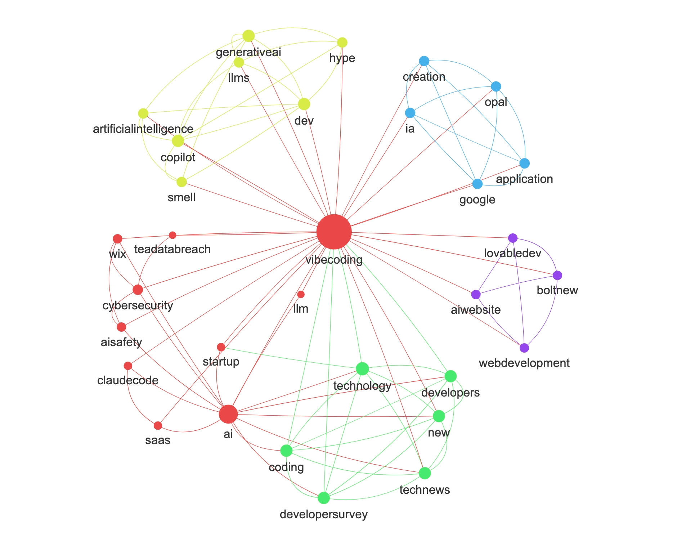

For over a decade, Socioviz proudly served the research community by mapping digital conversations. But the social web has changed and we need new approaches to navigate a fragmented landscape. Discover the new tools for the decentralized and community-driven web.
Discover hidden patterns in Bluesky conversations, identify most influential users and most discussed topics. Designed for researchers, powerful for marketers
Start analyzing now
A free, instant tool that analyzes content trends, engagement metrics, and hot topics for any public subreddit on Reddit, helping you understand its community dynamics quickly.
Have a tryBorn from a passion for Computational Social Science, Nodiux is designed to democratize network science. We empower researchers, marketers, and journalists to explore the complex structures of decentralized social media without technical barriers.